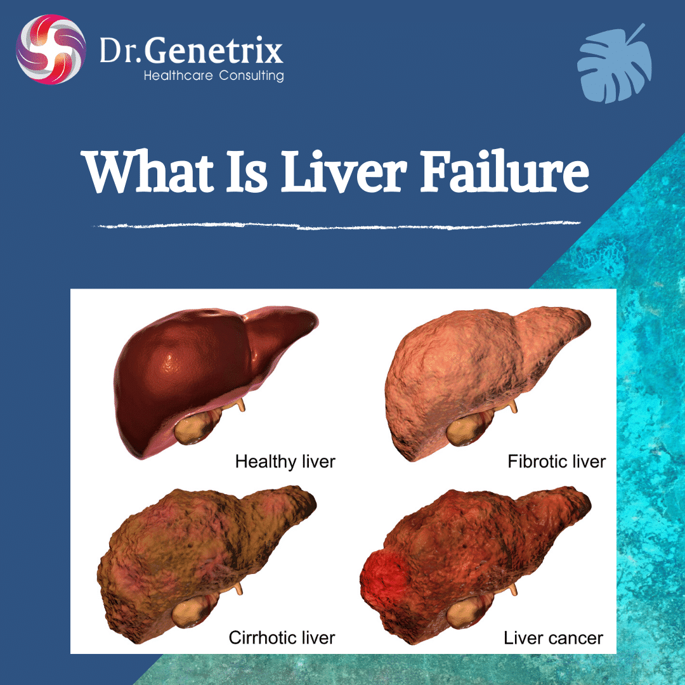

Liver failure

SYMPTOMS:
Liver disease doesn't always cause noticeable signs and symptoms. If signs and symptoms of liver disease do occur, the may include:
- Skin and eyes that appear yellowish (jaundice)
Abdominal pain and swelling
Swelling in the legs and ankles
Itchy skin
Dark urine color
Pale stool color
Chronic fatigue
Nausea or vomiting
Loss of appetite
Tendency to bruise easily
CAUSES
Infection
Parasites and viruses can infect the liver, causing inflammation that reduces liver function. The viruses that cause liver damage can be spread through blood or semen, contaminated food or water, or close contact with a person who is infected. The most common types of liver infection are hepatitis viruses, including:
- Hepatitis A
-
Hepatitis B
-
Hepatitis C
Immune system abnormality
Diseases in which your immune system attacks certain parts of your body (autoimmune) can affect your liver. Examples of autoimmune liver diseases include:
- Autoimmune hepatitis
-
Primary biliary cholangitis
-
Primary sclerosing cholangitis
Genetics
An abnormal gene inherited from one or both of your parents can cause various substances to build up in your liver, resulting in liver damage. Genetic liver diseases include:
- Hemochromatosis
-
Wilson's disease
-
Alpha-1 antitrypsin deficiency
Cancer and other growths
Examples include:
- Liver cancer
-
Bile duct cancer
-
Liver adenoma
DIAGNOSIS:
- Blood tests. A group of blood tests called liver function tests can be used to diagnose liver disease. Other blood tests can be done to look for specific liver problems or genetic conditions.
-
Imaging tests. An ultrasound, CT scan and MRI can show liver damage.
-
Checking a tissue sample. Removing a tissue sample (biopsy) from your liver may help diagnose liver disease and look for signs of liver damage. A liver biopsy is most often done using a long needle inserted through the skin to extract a tissue sample that's sent to a lab for testing.
TREATMENT
- Treatment for liver disease depends on your diagnosis. Some liver problems can be treated with lifestyle modifications, such as stopping alcohol use or losing weight, typically as part of a medical program that includes careful monitoring of liver function. Other liver problems may be treated with medications or may require surgery.
-
Treatment for liver disease that causes or has led to liver failure may ultimately require a liver transplant.